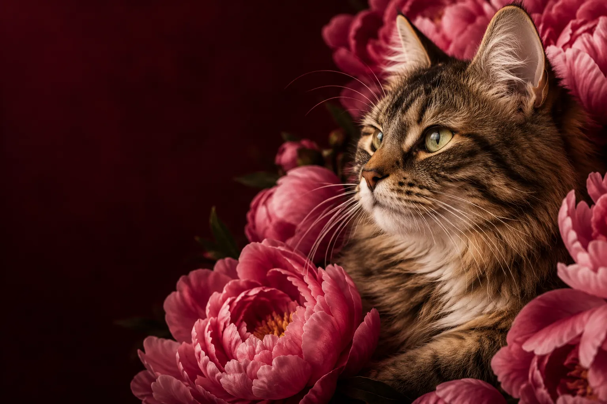

Často kladené otázky
Na co se nás naši klienti nejčastěji ptají?
Jak probíhá první návštěva?
Nejdříve si v klidu promluvíme o vaší kočce, jejích zvycích a důvodu návštěvy. Poté následuje vyšetření a společná domluva další péče. Vezměte s sebou očkovací průkaz a dostupné zprávy z předchozích vyšetření.
Je nutné se objednat předem?
Ano, běžné návštěvy plánujeme po předchozí domluvě. Máme tak dostatek času na každého pacienta. V akutním případě nás kontaktujte telefonicky.
Jaké platební metody přijímáte?
Na recepci můžete zaplatit hotově i platební kartou. Před plánovaným výkonem s vámi probereme předpokládaný rozsah a cenu péče.
Poskytujete pohotovostní péči?
Ano, pohotovost je dostupná telefonicky i mimo běžnou ordinační dobu. Před příjezdem prosím vždy zavolejte a domluvte se s naším týmem.
Pečujete i o venkovní kočky?
Pečujeme o kočky žijící doma i venku. Informace o prostředí a běžných zvycích nám pomohou přizpůsobit péči vašemu zvířeti.
Jak často chodit na preventivní prohlídky?
Vhodný interval domluvíme podle věku, zdravotního stavu a potřeb vaší kočky při konzultaci s veterinárním lékařem.
Jak kočku připravit na cestu?
Na návštěvu přineste kočku v bezpečně uzavíratelné přepravce. Konkrétní pokyny před vyšetřením nebo zákrokem vám předem sdělí náš tým.